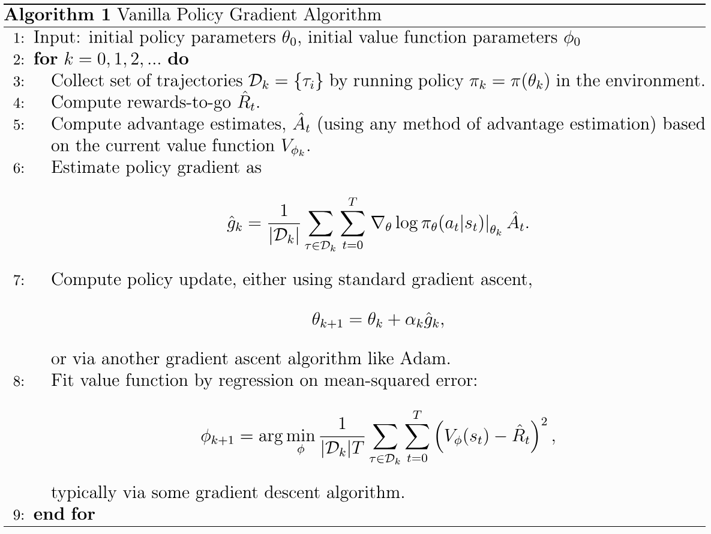

📜 引言
该章节记录了更多的 AC 算法
AC 架构已经成为当今 LLM 微调的主流架构，其中的 PPO、GRPO 算法甚至成为主流大模型训练的标准。接下来的章节中，我们将一步步了解深入。
🧩 经典算法
重温一下优化目标，我们一般令 J(θ)=Vˉπ=Eτ[R(τ)]，此时
∇θJ(θ)=Eτ[R(τ)t=0∑∞∇θlogπ(at∣st)]≈1−γ1⋅E[Qπ(s,a)⋅∇θlogπ(a∣s)]=1−γ1⋅E[Aπ(s,a)⋅∇θlogπ(a∣s)] 第一个等式显然，后两个等式可查看前面章节的推导。我们就可以将 maxθJ(θ) 转化为
θmax Es,a[Aπ(s,a)] 我们可以使用 importance sampling 将其转化为 off-policy
θmax Es,a∼β[β(a∣s)π(a∣s)⋅Aπ(s,a)]
Vanilla Policy Gradient

VPG 是一个 on-policy 算法；采用 AC 架构，Actor 使用 SGD 进行更新，Critic 使用 TD 进行更新（注意这里是 undicounted 的情况）
Trust Region Policy Optimization
在前面的算法中，我们常用
θt+1=θt+αtAπ(st,at)⋅∇θlogπ(at∣st)=θt+αt∇θJ(θ) 来更新模型参数。但大量实验发现，该做法对 αt 极度敏感，因为在参数空间上细微的步进，也很有可能导致策略上的巨大改变。对此，TRPO算法就是为了解决 αt 参数敏感而存在的。
策略更新公式
我们定义 π=π(θ), π~=π(θ~) ，此时可以验证
J(θ~)=J(θ)+Eτ∼π~[t=0∑∞γtAπ(st,at)]=J(θ)+s∑t=0∑∞γtP(st=s∣π~)a∑π~(a∣s)⋅γtAπ(s,a)=J(θ)+s∑ρπ~(s)a∑π~(a∣s)⋅Aπ(s,a) 具体证明见 参考文献 1 - Appendix A
根据上式，只要 ∑sρπ~(s)∑aπ~(a∣s)⋅Aπ(s,a)>0 即可实现真正的优化。比如在 tabular Q-learning 中
π~(s)=aargmaxQπ(s,a)=aargmaxAπ(s,a) 代入上式可以发现目标函数一定会提升。
我们定义
Lθ(θ~)=J(θ)+s∑ρπ(s)a∑π~(a∣s)⋅Aπ(s,a) 💡
注意这里跟上式的差别是，将 ρπ~ 替换成 ρπ
Theorem 1
虽然 Lθ(θ~)=J(θ~)，但是它满足以下的不等式，该不等式反映了二者的数值关系
Let α=DTVmax(π,π~). Then the following bound holds:J(θ~)≥Lθ(θ~)−(1−γ)24ϵγα2whereϵ=s,amax∣Aπ(s,a)∣ or
J(θ~)≥Lθ(θ~)−CDKLmax(π,π~)whereC=(1−γ)24ϵγ
具体的证明请见 参考文献 1 - Appendix B&C
Monotonic Improvement Guarantee for General Stochastic Policies
在优化时，我们希望 J(θ0)≤J(θ1)≤⋯ ，即优化目标单调提升。利用 Theorem 1 的结论
J(θi+1)J(θi)≥Lθi(θi+1)−CDKLmax(πi,πi+1)=Lθi(θi)−CDKLmax(πi,πi) 两式相减得到
J(θi+1)−J(θi)≥[Lθi(θi+1)−CDKLmax(πi,πi+1)]−[Lθi(θi)−CDKLmax(πi,πi)] 于是我们得到了优化目标提升的下界，我们将问题转化为
θi+1=θargmax [Lθi(θ)−CDKLmax(πi,π)] 通过优化上述目标，能够保证 J(θi+1)≥J(θi) ，从而避免大量调参 αt
Optimization of Parameterized Policies
上式中还有一个问题，参数 C=(1−γ)24ϵγ 难以精确求解，为使优化更加robust且高效，我们将原目标近似成
θmax Lθold(θ)s.t.DKLmax(θold, θ)≤δ 接着我们将式子展开，并使用 importance sampling 得到
θmaximize Es∼ρθold,a∼πθold[πθold(a∣s)πθ(a∣s)Qπθold(s,a)]subject to Es∼ρθold[DKL(πθold(⋅∣s)∥πθ(⋅∣s))]≤δ. 💡
这里我们将 DKLmax 修改成了 DKLρθold 。这些操作都利于最终的代码实现。
最终的代码实现中，将期望 E 修改成多次采样平均。
Efficiently Solving the Trust-Region Constrained Optimization Problem
上面已经定义了最终的优化目标，下面讨论如何求解该优化问题。
其实就是一个简单的优化问题，使用拉格朗日乘子法得到更新方向，并使用线搜索确定更新步长，具体内容请见 参考文献 2
最终有
θk+1=θk+αjg⊤H−1g2δH−1g 伪代码如下

Proximal Policy Optimization
TRPO是一个数学推导严谨的算法，它从数学上证明了该算法的可行性。可是在真正实施中却深受计算复杂度限制，在更新时需要计算二阶导 H 以及其逆矩阵 H−1，这极大限制了微调速度。
我们重新写出 TRPO 的优化目标
θmaximize Es∼ρθold,a∼πθold[πθold(a∣s)πθ(a∣s)Qπθold(s,a)]subject to Es∼ρθold[DKL(πθold(⋅∣s)∥πθ(⋅∣s))]≤δ. 换个角度看，KL 约束条件也可以是为了缩小 πθold 和 πθ 之间的差距。在放弃一部分数学严谨性下，PPO算法将优化目标修改成
L(s,a,θk,θ)=minθk+1=θargmax L(s,a,θk,θ)(πθk(a∣s)πθ(a∣s)Aπθk(s,a), clip(πθk(a∣s)πθ(a∣s),1−ϵ,1+ϵ)Aπθk(s,a)) 更多的介绍请见 参考文献 4

GAE
GAE并不是一个新的强化学习算法，它是一种新的优势函数 A(s,a) 的估计算法，目前正广泛应用于各种主流架构中。
我们常使用 Vϕ(s) 来对 Vπ(s) 进行估计，其中 ϕ 是模型参数。在实现中有
rt+1+Vϕ(st+1)−Vϕ(st)=Aϕ(st,at)≈Aπ(st,at) 该做法在 Vϕ(s)=Vπ(s) 时是无偏的，但在正常情况下是不可能成立的，也就是说 该估计方法在绝大多数时候都是有偏估计。
我们还可以使用 ∑l=0∞γlrt+l 来估计 Aπ(st,at) ，该做法是无偏的，但是其方差显然比 rt+1+Vϕ(st+1)−Vϕ(st) 大。
为了综合两者的优势，GAE 方法出现了，它定义
δtVA^t(n)=rt+1+γV(st+1)−V(st)=l=0∑n−1γlδt+lV 并使用
A^tGAE(γ,λ)=(1−λ)n=1∑∞λn−1A^t(n)=l=0∑∞(γλ)lδt+lV 来作为最终的优势函数估计。具体的证明详见 参考文献 5 .
📋 参考文献
- Trust Region Policy Optimization
https://arxiv.org/abs/1502.05477
- 信赖域策略优化
https://www.cnblogs.com/kailugaji/p/15388913.html
- OpenAI Spinning Up - Trust Region Policy Optimization
https://spinningup.openai.com/en/latest/algorithms/trpo.html
- 近端策略优化 (PPO) 算法深度解析
https://zhuanlan.zhihu.com/p/27444364357
- HIGH-DIMENSIONAL CONTINUOUS CONTROL USING GENERALIZED ADVANTAGE ESTIMATION
https://arxiv.org/pdf/1506.02438
{kind=link}